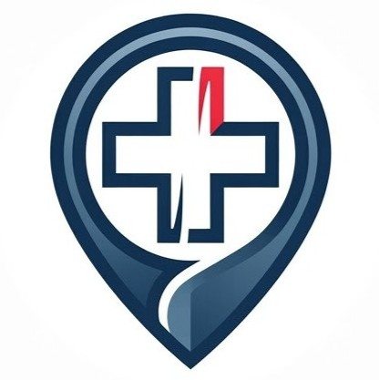

Transporte asistencial en el Valle de Aburrá
Tu bienestar nos mueve.
Facilitamos traslados seguros, cómodos y oportunos para que tú y tu familia lleguen con tranquilidad a sus citas médicas.
Solicitar servicio Conocer servicios
Facilitamos traslados seguros, cómodos y oportunos para que tú y tu familia lleguen con tranquilidad a sus citas médicas.
Solicitar servicio Conocer serviciosCerca de tí en cada trayecto.
Ambul-app conecta a personas con necesidades especiales de movilidad con transporte asistencial confiable. Coordinamos cada traslado para que tu única preocupación sea sentirte bien.
Somos un servicio complementario de transporte programado, no un servicio de atención de emergencias.
Fácil y sin complicaciones
Programa tu traslado en tres pasos sencillos.
Registra tus datos y necesidades de movilidad de forma segura.
indica fecha, hora, origen y destino de tu cita médica.
Te recogemos y acompañamos con comodidad y cuidado.
PENSADO PARA TI
Diseñamos un servicio accesible para acompañarte con confianza antes, durante y después de cada recorrido.
Vehículos equipados según tus necesidades de movilidad.
Elige con anticipación la fecha y hora de tu traslado.
Traslados a centros médicos en el Valle de Aburrá
Acompañamiento humano durante todo el recorrido.
INFORMACIÓN IMPORTANTE
Si tú o alguien cercano presenta una emergencia médica, comunícate de inmediato con la línea 123. Nuestro servicio es exclusivamente para traslados asistenciales programados.
Estamos para escucharte